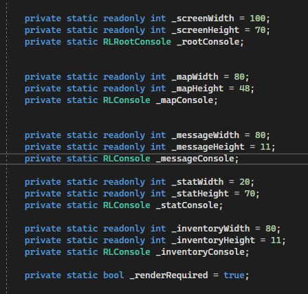

Starting Project...Sort of - 1/23/22
I originally had the plan to do a project that looked into the world of machine learning and computer vision. For myself personally, I have always been good at making components as I have been a cnc programmer and machinist up to this point in life, and not do I just get to work with cool machines at work, but I also have a mill, lathe and 3d printer at home. Although much smaller, like wayyyy smaller. But still as you can imagine that makes things pretty fun for someone like me. The problem is I have always been missing that skill to make things come to life, and this became a big part of why I left my last job and study to get a CS degree. I've made parts for my drone, but I always thought it would be really cool to actually make one completely on my own, and I don't mean using some kit, but really making one where I would have to program the firmware, I could use computer vision applications to do things like selfie recognition. There was one problem though, and that was time. I found out pretty fast that trying to learn python from nothing and start this project was going to take much longer than I thought. While I was able to pick up some of the code pretty quick, as it is a really simple code, the fact is I still needed more time and between a school, a full-time job, part-time job and just life in general, I realized I needed to change course at least for now and save that project for sometime like summer. I decided I just wanted to focus on using what I know in C# and create something with that. I figured this is a good time because we are learning some awesome material this quarter and I feel like getting a good grasp of it would be really fun to try in my own project. What that is... I'll get back to you on that.
Starting Project- For Reals This Time 1/31/22
So I decided to just make a game. Right now we are diving deeper in to the 4 pillars of object oriented programming and I felt like working on something where I can apply what I am learning throughout the quarter would probably be best. This also helps with my lack of time situation as I can program everything on a weekly basis without feeling like I need to read a book or do a bunch of research every time I get stuck and try to do something new in a language like python, or deal and learn the different types of libraries to find what would be best. My first step is to figure out what the game is going to be and to create a layout for all my classes and probably an API that I could use. I know that I am going to have basic classes like obviously a character, enemys, a way to attack, just to name a few. I just really getting in to the nitty gritty late last year so it'll to try something that will test what I know and something that I can contiually improve.
Initial Design - 2/4/22
So I decided to make something that won't blow anyone away but that is fairly simple and would be good for me to do right now. The point of this project for me is not to create the next facebook or anything but something that I can build upon as I continue learning and can apply to other future projects. My other goal this quarter is to focus on learning front end programming, so in other words this portfolio, which I hope will progress nicely as time goes on. That said, I decided to just use RLNet which is just a simple API that I can download via Nuget in visual studio. I also found some nice support online for a game very similar to what I am thinking of which will be nice to reference if needed. RLNet is used to just make simple tile based games, kind of like those old DOS games from way back when. This will help me keep things simple but still practice using object oriented programming to make it. I started just by writing out my classes on paper for what I think I would need. I obviously have my class for the hero, aka me, monsters, something to create my map and also have some subclasses for the monsters and what not, but I am starting there for now.
Creating the Console - 2/13/22
The game in this case is just going to be made using a console application. The first thing I had to do was make sure that RLNet was working correctly. This I learned could be done by rendering a RLRootConsole. I did have to reference some material online to finally get this going as again this was new to me but it helped me understand the way RLNet worked. Before this I just knew it used tiles. I had to first use a bitmap font file which was an 8x8 pixel png file, as well two read only int variables for the width and the height. This was going to tell us how many tile wide and tall the console will be. This was done by instantiting RLRootConsole and passing the int width and height to it along with the bitmap font. Where I was running in to a little bit of trouble was trying to call the rootConsole.Run method right after this. After some digging I learned I was missing some handlers, one that would run a update event, and then the render event. Of course. After that it was fairly easy. Once how the update event worked as well as the render event that called the .Draw() method, it all started making some sense. Even though I needed some help, I feel accomplished because I learned something new and was starting to get a grasp on how this would work.
Making A Screen - 2/19/22
So the next issue I ran into was trying to make the screen. Once I learned the console would be rendered, I thought I would be able to make something to use for a screen and apply some color to it but it wasn't displaying what I wanted it to. Once again I referenced some online material and found what I was doing wrong. I learned the difference was I was trying to make one console while it was actually better to make several sub consoles. Huge shout out to Faron Bracy who helped me out with this. He would always message me back pretty quick and gave me a link to some of his source code where he helped explain how to do it. After making a Game.cs class, I made several static readonly fields that would each have different sets of int variables for width and height. Essentially I was sort of doing it right to begin with but with several of them I could make the rootconsole, then one for the map, one to hold messages in, another to show an inventory and another for stats. Then it uses the loop like before that renders it until the game is closed. It was actually really easy once I understood it.
Using a Color Palette - 2/30/22
So I learned the next thing I could do is use a color palette. I learned that RLNet defines colors using a constructor called RLColor. It does this by taking in RGB values. After once again getting some tips from Faron, I realized there was going to be a ton of colors. Which made sense if you think about it even if a game is simple. I mean what game only uses a few colors. So naturally I made my color class. I was able to play around a bit using paletton. I did find some source code for this as much of it was the same code written over and over. I just changed the colors to my liking as well as some of the variable names. There wasn't much to this part but I will say it was pretty fun to play with.

Creating how the Map works - 3/1/22
I orginally wanted to try and make some sort of outside map or 2d scorlling game but after looking at different code I liked the idea of it being in a cave. This idea I took from other RLNet games that essentially used the same concept but for a dungeon. I liked it because you only expose what is around the player within a certain distance and the rest of it around the player is dark. This gives the effect that you are using a flashlight and you wouldn't see your enemies until you were within a certain distance. This is done by using some of the colors that are labeled for its field of view, which can be seen in the previous picture. If you see there are different forms of colors that are dark and light. So essentially the map will draw the colors out of the field of view with dark and obviously the ones that are with the light colors. The next job would be to create how the map is actually made and what it could look like.
Making a Player - 3/6/22
I've been having a little trouble on how the map could work. I initially was trying to make just based on using the colors and draw method but I realized it just wasn't going to work and it will be something I revisit. For now I figured I could make a class for my hero. We just recently were going over interfaces and how they could be used in a game app and it is something I think I will probably use here in the near future. For my player I just made a class called that player.cs and gave him all the attributes that a hero might need in attack, speed, health along with an inventory for money. Although I knew some of these features would be used on the enemy, so I figured I'd just make a class called person that they would inherit from. Except I also felt like I was going to run into some problems down the line with some of my character actions that might need to be passed down to other classes that are derived from some classes that I wouldn't want to change. So I looked in to using an interface and referenced dungeon game and it used a interface called IActor that used the attributes in the same way I was thinking so I decided to use this same concept and implemented it in my code.
Revisiting The Map - 3/11/22
After digging farther in to how to generate the map, I got some help in the way to draw it and it actually is a fairly simple concept. Essentially it works by asking which cells are explored, walkable and inview. The plan is to use if else statements that will set the cells by calling cell.X and cell.Y then draw the appropriate colors based on what were asking. This uses the draw RLconsole mapconsole to continually clear and draw the map as it is bwing explored and updated. Next will be actually creating a map by creating a makeshift cave with rooms and tunnels. To be continued...